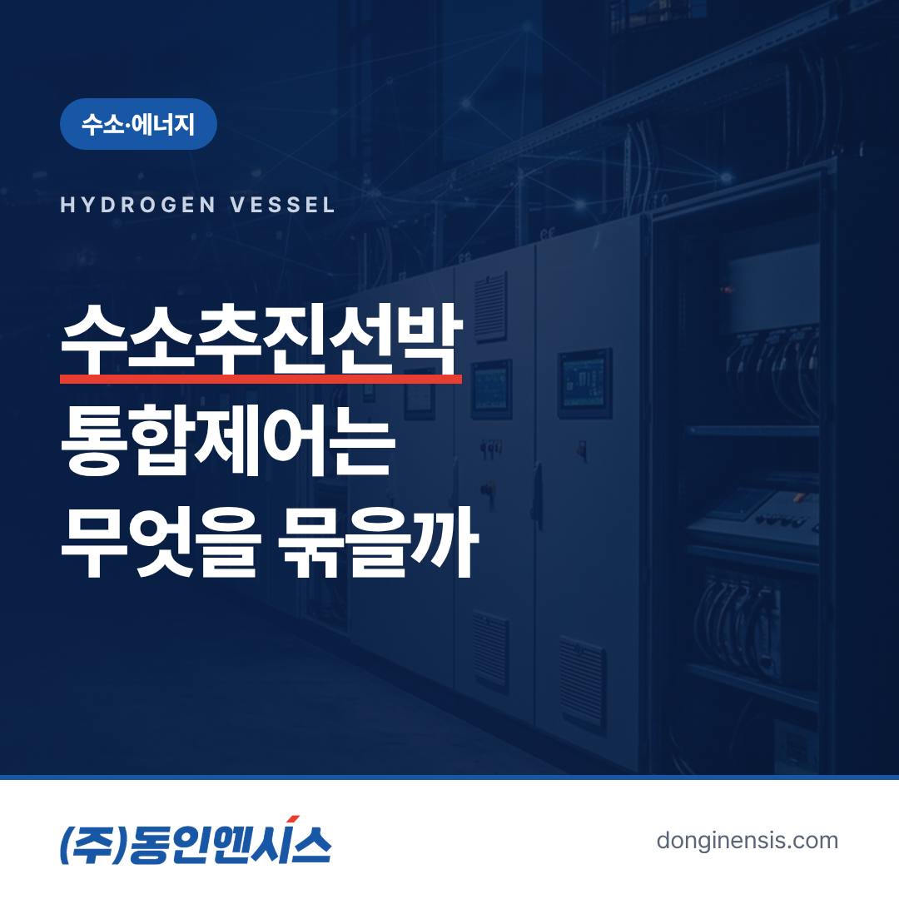
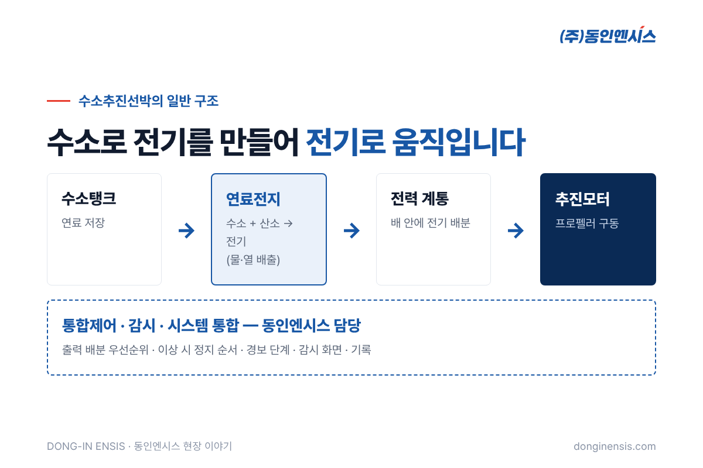
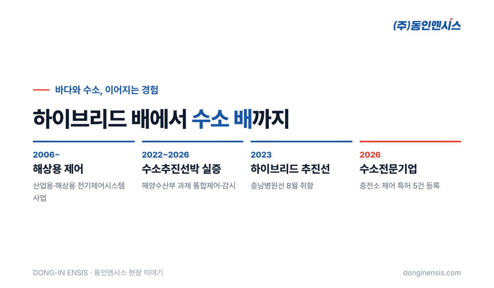

바다 위에서 배기가스 대신 물만 내보내는 배. 수소추진선박은 그런 배를 목표로 개발되고 있습니다. 이 글에서는 해양수산부의 소형 수소추진선박 기술개발·실증 과제에서 통합제어와 감시를 맡고 있는 동인엔시스가, 수소추진선박에서 제어시스템이 어떤 일을 하는지 현장의 시선으로 풀어 봅니다. 부산에 본사를 둔 동인엔시스는 디젤·전기 하이브리드 배의 제어에서 출발해 수소 충전 설비, 그리고 이제 수소로 움직이는 배까지 바다와 에너지 쪽 제어 경험을 넓혀 왔습니다.
이 배는 수소를 태워서 움직이는 것이 아닙니다. 일반적인 구조를 간단히 그려 보면 이렇습니다.
결국 '전기로 움직이는 배'이고, 그 전기를 배 안에서 수소로 직접 만들어 쓰는 구조입니다. 그래서 여러 장치가 한 몸처럼 맞물려 돌아가야 합니다.

육상의 공장 설비는 대개 한 대의 설비를 한 제어반이 맡습니다. 그런데 수소 선박에서는 수소탱크, 연료전지, 전력 계통, 추진모터가 서로의 상태에 따라 움직여야 합니다.
예를 들어 배가 속도를 올리려 하면 추진모터는 더 많은 전기를 원하고, 연료전지는 그만큼 전기를 더 만들어야 하며, 수소탱크에서는 그에 맞게 수소를 공급해야 합니다. 반대로 어느 한 곳에 이상이 생기면, 다른 장치들도 그에 맞춰 출력을 낮추거나 안전한 상태로 넘어가야 합니다.
이처럼 각 장치를 따로따로 제어하는 것이 아니라, 배 전체를 하나의 시스템으로 보고 순서와 조건을 맞추는 것이 통합제어입니다. 동인엔시스가 실증 과제에서 맡은 부분이 바로 이 통합제어와 감시, 그리고 여러 장치를 하나로 엮는 시스템 통합입니다.
수소는 가볍고 잘 퍼지는 기체라 다룰 때 각별한 주의가 필요합니다. 그래서 수소 설비를 갖춘 배에서는 압력, 온도, 각 장치의 운전 상태를 끊임없이 지켜보는 감시 기능이 제어만큼 중요합니다.
감시 화면은 기관실 운전자가 배 전체의 상태를 한눈에 파악하는 창입니다. 어떤 장치가 정상인지, 어디서 경보가 났는지, 지금 연료전지가 얼마나 전기를 만들고 있는지를 한곳에서 보여 줘야 합니다. 육지와 멀리 떨어진 바다에서는 문제가 커지기 전에 먼저 알아채는 것이 곧 안전이기 때문입니다.
Photorealistic photo of a small modern white eco-friendly coastal vessel moored at a quiet Korean harbor pier in the morning, sleek hull, a compact deckhouse with cylindrical gas tanks secured on the upper deck, calm water reflections, mountains in the background, no ship name, no flags with text, no brand logos, no readable text. 3:2 landscape.
여러 장치를 하나로 묶는 제어는 코드를 짜기 전에 "규칙"부터 정해야 합니다. 이런 배의 통합제어를 설계할 때 특히 먼저 합의하는 항목은 다음과 같습니다.
이 규칙들이 분명해야 장치를 만드는 여러 회사가 같은 그림을 보고 일할 수 있습니다. 시스템 통합이 기술만큼이나 "조율"의 일이라고 말하는 이유입니다.
수소추진선박의 통합제어는 갑자기 시작된 일이 아닙니다. 동인엔시스는 디젤엔진과 전기모터를 함께 쓰는 하이브리드 추진선의 제어를 먼저 해 왔습니다.
대표적인 배가 충남병원선(G/T 330톤급)입니다. 섬마을 주민들을 찾아가는 이 배에 동인엔시스는 추진시스템과 통합제어감시를 공급했고, 배는 2023년 8월 취항했습니다. 두 가지 동력을 상황에 맞게 나눠 쓰는 하이브리드 제어는, 여러 동력원과 전력 계통을 함께 다뤄야 하는 수소 선박의 통합제어와 맥이 닿아 있습니다.
선박용 제어반을 만드는 기본기도 그대로 이어집니다. 선급 상호인정 인증서를 갖춘 컨트롤러로 구성하고, 배마다 도면 승인을 받은 뒤 검사관이 입회한 시험을 거쳐야 배에 실을 수 있습니다.
수소 분야의 경험은 바다에만 머물지 않습니다. 육지에서는 SK E&S의 액화수소충전소 제어시스템을 맡았고, 충전소 제어와 관련해 등록한 특허가 다섯 건입니다. 2026년에는 정부의 수소전문기업 명단에도 이름을 올렸습니다.
충전소에서 수소를 안전하게 저장하고 공급하는 제어, 배 안에서 수소로 전기를 만들어 움직이는 제어는 무대만 다를 뿐 "수소를 안전하게, 끊김 없이 다룬다"는 같은 목표를 향합니다.

1991년 부산에서 문을 연 뒤 산업·선박용 제어반을 직접 설계하고 제작해 온 동인엔시스에게도, 수소 선박은 가장 공을 들이는 현장 가운데 하나입니다. 흔들리는 바다 위에서, 다루기 까다로운 연료로, 멈추지 않고 돌아가야 하는 시스템. 이런 배의 통합제어는 제어 기술 가운데서도 손이 많이 가는 분야입니다.
이런 현장에서 다듬어진 기준은 육상 공장의 지능형 제어반에도 그대로 적용됩니다. 설비를 제어하면서 온도·전류·진동 같은 데이터를 함께 남기는 제어반이 믿을 만하려면, 그 제어 자체가 먼저 단단해야 하기 때문입니다.
Photorealistic photo of a compact ship engine control room console: a marine control desk with two monitors showing an abstract system diagram of tanks, fuel cells and motors as simple blue and green blocks (no readable text), illuminated push buttons, a small porthole window, clean bright lighting, no people, no brand logos, no readable text. 3:2 landscape.
Q. 수소 선박은 언제쯤 실제로 운항하나요? 동인엔시스가 참여하는 과제는 2022년 4월부터 2026년 12월까지 기술개발과 실증을 진행하는 과제입니다. 상용 운항 시기는 과제 결과와 관련 제도에 따라 달라집니다.
Q. 동인엔시스가 배 전체를 만드나요? 아닙니다. 연료전지, 추진모터, 수소탱크 시스템을 하나로 묶는 통합제어·감시와 시스템 통합을 맡고 있습니다.
Q. 다른 친환경 선박 제어도 상담할 수 있나요? 네. 하이브리드 추진선, LNG 연료 선박의 연료가스공급 제어 등도 수행해 왔습니다. 선박과 요구사항을 알려 주시면 함께 검토합니다.
수소로 가는 배는 수소탱크와 연료전지, 추진모터가 한 몸처럼 움직여야 하는 배이고, 그 연결을 맡는 것이 통합제어입니다. 동인엔시스는 하이브리드 추진선에서 시작해 수소 선박까지 그 경험을 넓혀 가고 있습니다.
수소·에너지 분야의 다른 제어 사례도 홈페이지에서 보실 수 있습니다.
선박·수소 상담 051-862-3668 / dongin@donginmne.com
아래 질문 중 하나에 실제 경험으로 답해 본문 적당한 곳에 넣어 주세요. 사람이 직접 쓴 문장이 들어가면 네이버에서 저품질 위험이 줄고 노출에 도움이 됩니다.